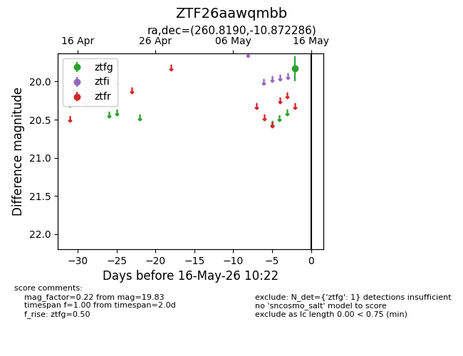
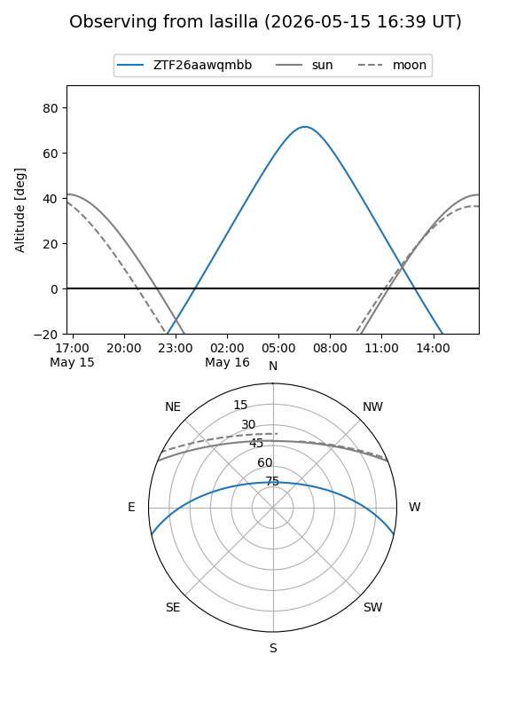
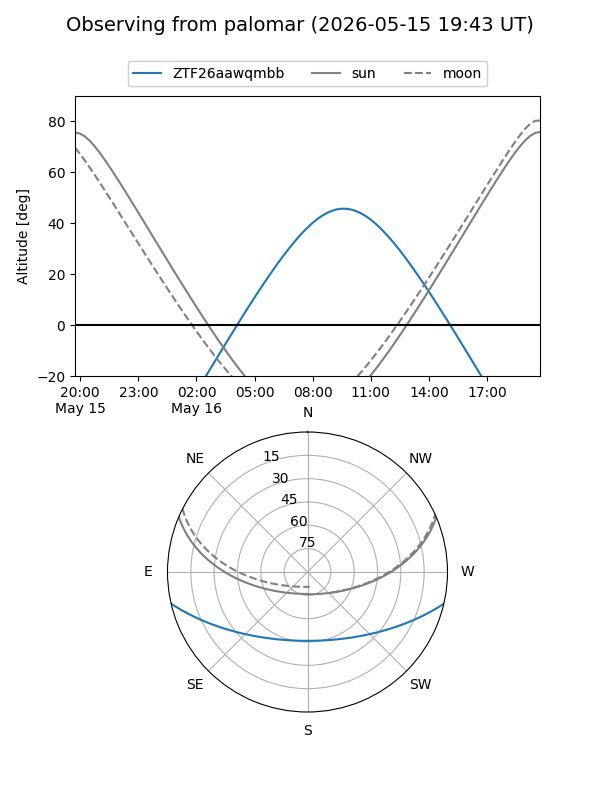
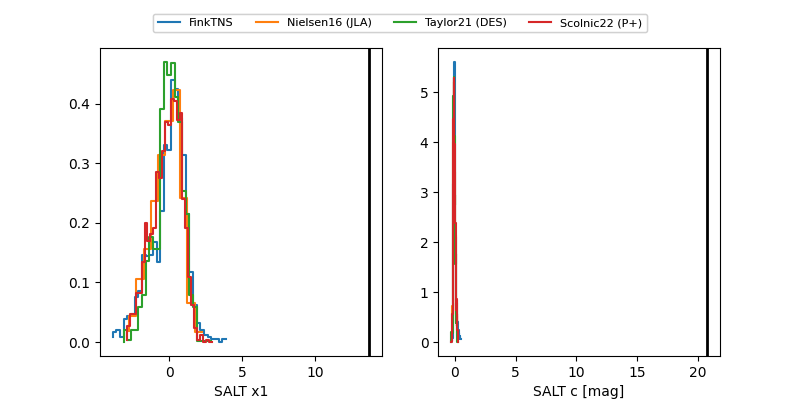

ZTF26aawqmbb
Target ZTF26aawqmbb at 2026-05-16 10:24
Aliases and brokers:
FINK: link
Lasair: link
ALeRCE: link
alt names
ZTF26aawqmbb (ztf,fink_ztf)
Coordinates:
equatorial (ra, dec) = 260.8190,-10.87229
equatorial (HMS+DMS) = 17:23:16.57,-10:52:20.23
galactic (l, b) = (12.6769,+14.00314)
Flags:
Photometry:
last ztfg=19.83
1 ztfg detections
Lightcurve

Visibility


Additional plots
